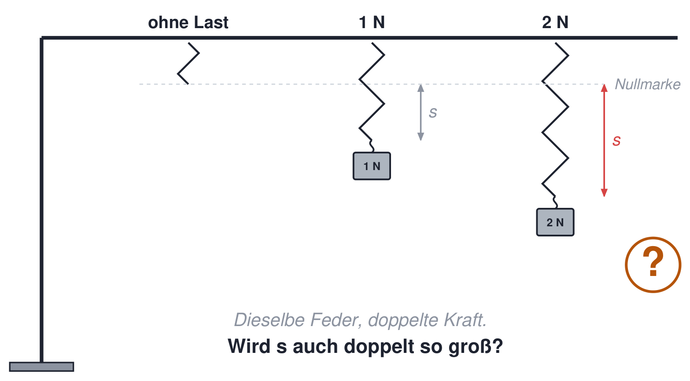
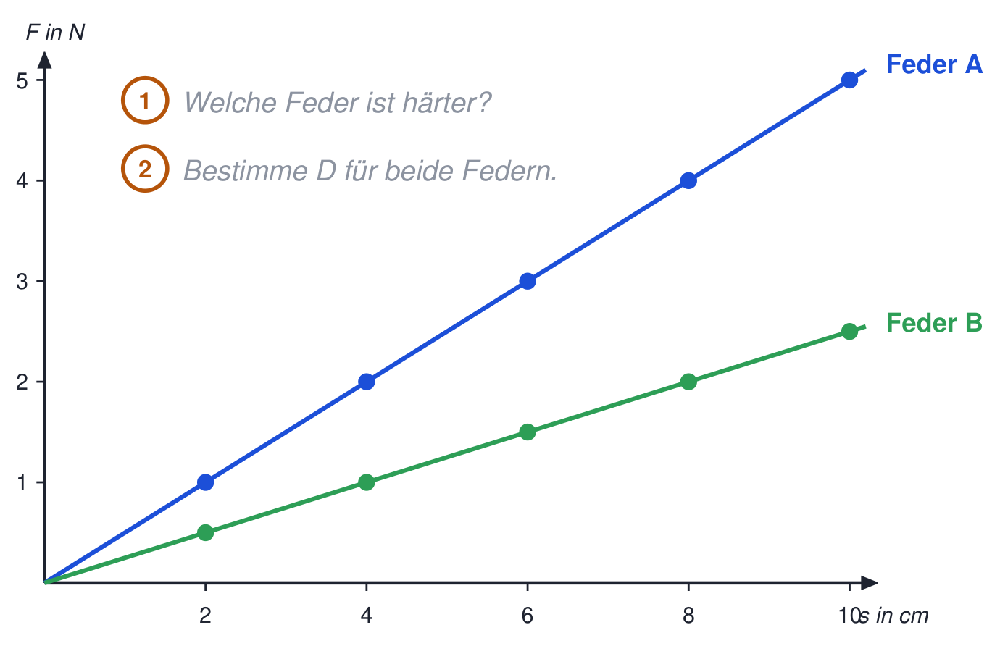

F₁ = 18 N und F₂ = 9 N wirken in gleicher Richtung. Berechne die resultierende Kraft.
Kräfte addieren, entgegengesetzt
F₁ = 25 N und F₂ = 16 N wirken entgegengesetzt. Bestimme Betrag und Richtung der resultierenden Kraft.
Kraftmesser ablesen
Nenne zwei Dinge, die du vor dem Ablesen an einem Kraftmesser prüfen musst, damit der Wert stimmt.
⏱ 8 min — allein ins Heft
Einstieg · Vergleich
Gewichtskraft und Ortsfaktor
Vergleiche
1) 27 N
2) 9 N, in Richtung der 25-N-Kraft
3) Nullstellung prüfen (unbelastet auf 0 N stehen), Kraftmesser in Richtung der Kraft halten (nicht schräg) — parallaxenfrei von vorn ablesen ist ebenfalls richtig.
Problemstellung
Gewichtskraft und Ortsfaktor
Schon gelesen?
duda.news (Interview mit Astronaut Matthias Maurer) · 29.09.2022
Astronaut Matthias Maurer erzählt, wie Menschen künftig auf dem Mond leben und trainieren sollen.
Dort sollen die Astronauten nicht Gewichte stemmen, sondern hüpfen.
Warum reicht Hüpfen auf dem Mond als Training nicht so gut wie auf der Erde – was ist dort anders?
Diskussion
Gewichtskraft und Ortsfaktor
Frage der Stunde — was meint ihr?
Wäre ein Astronaut auf dem Mond wirklich leichter — oder wiegt er dort nur weniger?
Überlegt zu zweit: Was vermutet ihr — und warum?
Schreib deine Vermutung ins Heft.
⏱ 3 min — zu zweit, dann in der Klasse
Erarbeitung · Bild
Gewichtskraft und Ortsfaktor
Ein Kran hebt eine Brücke
Ein riesiger Raupenkran hebt einen ganzen Brückenbogen an Seilen in die Luft.
Zeichnet in Gedanken die Gewichtskraft der Brücke ein: Wo greift sie an, wohin zeigt sie? Und welche Kraft hält dagegen?
Auflösung
Die Gewichtskraft greift an der Brücke an (Schwerpunkt) und zeigt senkrecht nach unten, zum Erdmittelpunkt. Die Seile ziehen gleich stark nach oben, deshalb schwebt die Brücke.
Foto: Hallucegenia · CC0 · Wikimedia Commons
Erarbeitung · Demo
Gewichtskraft und Ortsfaktor
Wir schauen zu: den Ortsfaktor finden
Material:Kraftmesser 20 N oder 50 N, Haken-Massestücke von 50 g bis 2 kg
Wäre ein Astronaut auf dem Mond wirklich leichter — oder wiegt er dort nur weniger?
Gibt an, wie viel Stoff in einem Körper steckt. Sie ist überall gleich — auch auf dem Mond.
Formelzeichen
m
Einheit
Kilogramm, Zeichen kg
Umrechnung
1 kg = 1000 g · 1 t = 1000 kg · 1 g = 1000 mg
Messgerät
Waage (Balkenwaage vergleicht Massen direkt)
Achtung: Die Küchenwaage zeigt Gramm an, misst aber eigentlich die Gewichtskraft und rechnet um. Auf dem Mond würde sie falsch anzeigen.
Erarbeitung · Tafelbild
Gewichtskraft und Ortsfaktor
Gewichtskraft und Ortsfaktor
Stundenfrage: Ist eine Astronautin auf dem Mond leichter?
Messreihe
Quotient F : m – was fällt auf?
Derselbe Körper an zwei Orten
Was ändert sich, was bleibt gleich?
Erarbeitung · Tafelbild
Gewichtskraft und Ortsfaktor
Messreihe
aus dem Versuchnur besprechen
Masse m in kg
Gewichtskraft F in N
0,05
0,5
0,1
1
0,2
2
0,5
5
1,0
10
2,0
20
Klick auf eine Lücke deckt sie auf.
Erarbeitung · Tafelbild
Gewichtskraft und Ortsfaktor
Quotient F : m – was fällt auf?
gemeinsam ausrechnennur besprechen
Der Quotient F : m ist jedes Mal etwa 10 N/kg.
Er ist unabhängig vom Körper.
Dieser Wert heißt Ortsfaktorg.
Klick auf eine Lücke deckt sie auf.
Erarbeitung · Tafelbild
Gewichtskraft und Ortsfaktor
Derselbe Körper an zwei Orten
Buch S. 18
Klick auf eine Lücke deckt sie auf.
Erarbeitung · Tafelbild
Gewichtskraft und Ortsfaktor
Was ändert sich, was bleibt gleich?
mündlich
Es ändert sich die Gewichtskraft.
Gleich bleibt die Masse – sie ist überall dieselbe.
Klick auf eine Lücke deckt sie auf.
Notieren · Tafelbild · so steht es im Heft
Gewichtskraft und Ortsfaktor
So steht es im Heft
Gewichtskraft und OrtsfaktorDatum:
Stundenfrage: Ist eine Astronautin auf dem Mond leichter?
Derselbe Körper an zwei Orten
Was ändert sich, was bleibt gleich?
Es ändert sich die Gewichtskraft.
Gleich bleibt die Masse – sie ist überall dieselbe.
Merksatz
Notieren · Merksatz · so steht es im Heft
Gewichtskraft und Ortsfaktor
So steht es im Heft
Gewichtskraft und OrtsfaktorDatum:
Stundenfrage: Ist eine Astronautin auf dem Mond leichter?
Derselbe Körper an zwei Orten
Was ändert sich, was bleibt gleich?
Es ändert sich die Gewichtskraft.
Gleich bleibt die Masse – sie ist überall dieselbe.
Merksatz
Die Gewichtskraft ist die Kraft, mit der ein Himmelskörper einen Körper anzieht. Sie ist zur Masse proportional: F = m · g. Der Ortsfaktorg beträgt auf der Erde etwa 10 N/kg, auf dem Mond nur etwa 1,6 N/kg. Die Masse eines Körpers ist überall gleich. Seine Gewichtskraft hängt vom Ort ab.
Notieren · Größe
Gewichtskraft und Ortsfaktor
Neue Größe: Gewichtskraft
Das gibt sie an
Die Kraft, mit der ein Himmelskörper an einem Körper zieht.
Formelzeichen
FG
Einheit
Newton, Zeichen N
Umrechnung
1 kN = 1000 N
Messgerät
Kraftmesser
Berechnen
FG = m · g
So groß ist das
1 kg hat auf der Erde etwa 10 N Gewichtskraft. Also: Masse in Kilogramm mal zehn — mehr ist es nie.
Achtung: Masse und Gewichtskraft sind nicht dasselbe. Die Masse bleibt, die Gewichtskraft ändert sich mit dem Himmelskörper.
Notieren · Größe
Gewichtskraft und Ortsfaktor
Neue Größe: Ortsfaktor
Das gibt sie an
Gibt an, wie viel Gewichtskraft auf 1 kg Masse entfällt. Er hängt davon ab, wo man ist.
Formelzeichen
g
Einheit
Newton je Kilogramm, Zeichen N/kg
Umrechnung
Erde ≈ 10 N/kg · Mond ≈ 1,6 N/kg · Mars ≈ 3,7 N/kg
Messgerät
Kein eigenes Gerät — man bestimmt ihn aus FG und m.
Berechnen
g = FG : m
Achtung: Wir rechnen im Unterricht IMMER mit 10 N/kg, auch wenn im Tabellenwerk ein genauerer Wert steht.
Hilfe · Rechenaufgaben
Gewichtskraft und Ortsfaktor
So löst du eine Rechenaufgabe
Gegeben — alle Werte mit Formelzeichen und Einheit — gleich in die passende Einheit umrechnen (g → kg, cm → m)
Gesucht — das Formelzeichen der gesuchten Größe
Formel — aus dem Merksatz oder dem Formeldreieck ablesen
Einsetzen — Zahl und Einheit einsetzen
Einheit — mit den Einheiten rechnen — so weißt du vorher, welche Einheit herauskommt
Sprungstelzen sind eine Mischung aus Stelzen und Trampolin: unter jedem Fuß sitzt eine gebogene Feder.
Das Körpergewicht spannt die Feder, beim Absprung schleudert sie einen nach oben.
Was passiert mit der Feder, wenn ein schwerer Mensch statt eines leichten auf den Stelzen steht?
Motivation
Hooke'sches Gesetz
Frage der Stunde

Was passiert mit einer Feder, wenn ich unterschiedlich viel Masse daran anhänge?
Schreib deine Vermutung ins Heft.
Kennst du das?
Weiche und harte Matratzenfedern — unterschiedliche Federkonstante.
Ein Bungee-Seil, das sich stark dehnt.
Die Feder im Kugelschreiber.
Erarbeitung · Bild
Hooke'sches Gesetz
Federn unter einer Lokomotive
Dicke Schraubenfedern zwischen Fahrgestell und Lokomotive (E-Lok 162.036).
Warum sind diese Federn so dick? Was passiert mit ihnen, wenn die Lok schwerer beladen wäre?
Auflösung
Die Lok ist sehr schwer; dünne Federn würden zu stark zusammengedrückt. Je größer die Kraft, desto stärker werden die Federn zusammengedrückt (doppelte Kraft – doppelte Verformung). Dicke Federn sind härter.
Wie hängt die Verlängerung einer Feder von der Kraft ab, die an ihr zieht?
Plant euren Versuch
Was verändert ihr — und in wie vielen Schritten?
Was messt ihr, und womit?
Was muss bei allen Messungen gleich bleiben?
Woran erkennt ihr am Ende die Antwort auf die Forscherfrage?
Sicherheit: Hänge nicht mehr Masse an die Feder, als sie halten kann. Eine überdehnte Feder geht kaputt und wird nicht wieder, wie sie war. Wenn du unsicher bist, frag deine Lehrkraft, ob du noch mehr anhängen darfst.
Experiment · Durchführung
Hooke'sches Gesetz
Hooke'sches Gesetz
Art
Schülerexperiment, verbindlich, ohne Bewertung
Zeitbedarf
ca. 45 min inklusive Auswertung
Material
Schraubenfedern (weich und hart), Stativmaterial, Haken-Massestücke 50 g und 100 g
Sicherheit
Nicht mehr Masse anhängen, als die Feder halten kann — im Zweifel fragen
Prüft euch selbst
Habt ihr die Länge notiert, bevor die erste Masse dran hing?
Messt ihr die Verlängerung oder die ganze Länge?
Bleibt die Feder bei allen Messungen dieselbe?
Hat jede Messung eine eigene Zeile in der Tabelle?
Experiment · Protokoll · Tafelbild
Hooke'sches Gesetz
Hooke'sches Gesetz – Schülerexperiment
Stundenfrage: Wie hängt die Verlängerung einer Feder von der Kraft ab?
Aufbau
Messwerte und Quotientenvergleich
Auswertung
Experiment · Protokoll · Tafelbild
Hooke'sches Gesetz
Aufbau
aus dem Versuchnur besprechen
Klick auf eine Lücke deckt sie auf.
Experiment · Protokoll · Tafelbild
Hooke'sches Gesetz
Messwerte und Quotientenvergleich
aus dem Versuchins Heft: die ersten 3 Zeilen
F in N
s in cm
F : s in N/cm
0,5
1,0
0,5
1,0
2,0
0,5
1,5
3,0
0,5
2,0
4,0
0,5
2,5
5,0
0,5
Klick auf eine Lücke deckt sie auf.
Experiment · Protokoll · Tafelbild
Hooke'sches Gesetz
Auswertung
gemeinsam ausrechnen
Die Messpunkte liegen auf einer Ausgleichsgeraden.
Sie verläuft durch den Ursprung.
Klick auf eine Lücke deckt sie auf.
Auswertung · Tafelbild · so steht es im Heft
Hooke'sches Gesetz
So steht es im Heft
Hooke'sches Gesetz – SchülerexperimentDatum:
Stundenfrage: Wie hängt die Verlängerung einer Feder von der Kraft ab?
Messwerte und Quotientenvergleich
F in N
s in cm
F : s in N/cm
0,5
1,0
0,5
1,0
2,0
0,5
1,5
3,0
0,5
Auswertung
Die Messpunkte liegen auf einer Ausgleichsgeraden.
Sie verläuft durch den Ursprung.
Merksatz
Auswertung · Merksatz · so steht es im Heft
Hooke'sches Gesetz
So steht es im Heft
Hooke'sches Gesetz – SchülerexperimentDatum:
Stundenfrage: Wie hängt die Verlängerung einer Feder von der Kraft ab?
Messwerte und Quotientenvergleich
F in N
s in cm
F : s in N/cm
0,5
1,0
0,5
1,0
2,0
0,5
1,5
3,0
0,5
Auswertung
Die Messpunkte liegen auf einer Ausgleichsgeraden.
Sie verläuft durch den Ursprung.
Merksatz
Solange eine Schraubenfeder nicht überdehnt wird, ist die Verlängerung s zur wirkenden Kraft F proportional: F ~ s bzw. F = D · s (Hooke'sches Gesetz). Im F-s-Diagramm ergibt sich eine Gerade durch den Ursprung. Die FederkonstanteD = F : s gibt an, welche Kraft die Feder um eine bestimmte Strecke dehnt. Je größer D, desto härter die Feder und desto steiler die Gerade.
Auswertung · Größe
Hooke'sches Gesetz
Neue Größe: Federkonstante
Das gibt sie an
Gibt an, wie viel Kraft man braucht, um eine Feder um 1 cm zu dehnen. Sie beschreibt, wie hart eine Feder ist.
Formelzeichen
D
Einheit
Newton je Zentimeter, Zeichen N/cm
Umrechnung
1 N/cm = 100 N/m
Messgerät
Kein eigenes Gerät — man bestimmt sie aus einer Messreihe von F und s.
Berechnen
D = F : s
Achtung:D ist eine Eigenschaft der Feder, nicht der Last. Hängt man mehr an, bleibt D gleich — nur F und s werden größer.
Hilfe · Formeldreieck
Hooke'sches Gesetz
Das Formeldreieck: Hooke'sches Gesetz
Die gesuchte Größe mit dem Finger zudecken.
Stehen die beiden anderen nebeneinander: malnehmen.
Steht eine über der anderen: teilen — oben durch unten.
Hilfe · Musteraufgabe
Hooke'sches Gesetz
Federkonstante bestimmen
Eine Feder wird mit 3 N um 6 cm verlängert. Bestimme ihre Federkonstante.
Gegeben
F = 3 N s = 6 cm
Gesucht
D
Formel
D = F : s
Einsetzen
D = 3 N : 6 cm
Einheit
N : cm = N/cm
Ergebnis
D = 0,5 N/cm
Hilfe · Musteraufgabe
Hooke'sches Gesetz
Stimmt das? Federkonstante bestimmen
Ergebnis:D = 0,5 N/cm
Gegenprobe: rückwärts rechnen
F = D · s = 0,5 N/cm · 6 cm = 3 N ✓
Plausibel? Für einen halben Newton dehnt sie sich 1 cm — eine eher weiche Feder, wie im Schülerexperiment.
Antwort: Die Feder hat die Federkonstante 0,5 N/cm.
Hilfe · Musteraufgabe
Hooke'sches Gesetz
Verlängerung berechnen
Dieselbe Feder (D = 0,5 N/cm) wird mit 2 N belastet. Berechne die Verlängerung.
Gegeben
D = 0,5 N/cm F = 2 N
Gesucht
s
Formel
s = F : D (im Dreieck s zudecken)
Einsetzen
s = 2 N : 0,5 N/cm
Einheit
N : N/cm = cm — die N kürzen sich weg
Ergebnis
s = 4 cm
Hilfe · Musteraufgabe
Hooke'sches Gesetz
Stimmt das? Verlängerung berechnen
Ergebnis:s = 4 cm
Gegenprobe: rückwärts rechnen
F = D · s = 0,5 N/cm · 4 cm = 2 N ✓
Plausibel? Weniger Kraft als vorher (3 N), also weniger Verlängerung als 6 cm — passt.
Antwort: Die Feder verlängert sich um 4 cm.
Abschlussübung · falls Zeit
Hooke'sches Gesetz
zwei Federn im Diagramm

Vergleiche die beiden Federn und bestimme jeweils die Federkonstante.
Abschlussübung · Lösung
Hooke'sches Gesetz
Lösung: zwei Federn im Diagramm
1 Feder A ist härter: bei gleicher Dehnung braucht sie die größere Kraft, ihre Gerade ist steiler.
2 Feder A: D = 5 N : 10 cm = 0,5 N/cm
Feder B: D = 2,5 N : 10 cm = 0,25 N/cm
Kontrolle: Der Quotient F : s ist bei jedem Punkt derselben Gerade gleich.
Check-out
Hooke'sches Gesetz
Check-out
Erkläre das Hooke'sche Gesetz in eigenen Worten und nenne, was die Federkonstante D aussagt.
Welche Frage ist bei dir noch offen?
Wie sicher bist du?
👍 sicher👌 mit Hilfe👎 noch nicht
Puffer · falls Zeit bleibt
Hooke'sches Gesetz
Bankrücken: 8 Fragen
Ein Kind steht neben seiner Nachbarin oder seinem Nachbarn.
Die Frage wird vorgelesen. Wer zuerst richtig antwortet, rückt eine Bank weiter.
Dort geht es gegen das nächste Kind.
Wer kommt am weitesten?
Puffer · Bankrücken · 1 von 8
Hooke'sches Gesetz
Frage 1
Wie heißt das Gesetz für die Feder?
Antwort: Hooke'sches Gesetz
Puffer · Bankrücken · 2 von 8
Hooke'sches Gesetz
Frage 2
Formelzeichen der Federkonstante?
Antwort: D
Puffer · Bankrücken · 3 von 8
Hooke'sches Gesetz
Frage 3
Einheit der Federkonstante, wie wir sie benutzen?
Antwort: N/cm
Puffer · Bankrücken · 4 von 8
Hooke'sches Gesetz
Frage 4
Gleichung des Hooke'schen Gesetzes?
Antwort: F = D · s
Puffer · Bankrücken · 5 von 8
Hooke'sches Gesetz
Frage 5
D = 2 N/cm, s = 3 cm. Kraft?
Antwort: 6 N
Puffer · Bankrücken · 6 von 8
Hooke'sches Gesetz
Frage 6
Was ist s bei der Feder: Länge oder Verlängerung?
Antwort: die Verlängerung
Puffer · Bankrücken · 7 von 8
Hooke'sches Gesetz
Frage 7
Form des F-s-Diagramms?
Antwort: Gerade durch den Ursprung
Puffer · Bankrücken · 8 von 8
Hooke'sches Gesetz
Frage 8
Wiederholung: Gewichtskraft von 500 g auf der Erde?
Erkläre das Hooke'sche Gesetz in eigenen Worten und nenne, was die Federkonstante D aussagt.
Zuerst allein überlegen, dann mit dem Nachbarn vergleichen.
Diskussion
Übungsstunde: Lerntheke Kräfte
Frage der Stunde — was meint ihr?
Welche Aufgaben zu Kraft, Gewichtskraft und Feder kannst du schon sicher — und welche noch nicht?
Jemand sagt: „Ich kann die Formel, also kann ich die Aufgabe.“ — stimmt das?
Überlegt zu zweit: Was vermutet ihr — und warum?
Schreib deine Vermutung ins Heft.
⏱ 3 min — zu zweit, dann in der Klasse
Notieren · Tafelbild · so steht es im Heft
Übungsstunde: Lerntheke Kräfte
So steht es im Heft
Übungsstunde: Lerntheke KräfteDatum:
Stundenfrage: Welche Aufgaben zu Kraft, Gewichtskraft und Feder kannst du schon sicher — und welche noch nicht?
Merksatz
Notieren · Merksatz · so steht es im Heft
Übungsstunde: Lerntheke Kräfte
So steht es im Heft
Übungsstunde: Lerntheke KräfteDatum:
Stundenfrage: Welche Aufgaben zu Kraft, Gewichtskraft und Feder kannst du schon sicher — und welche noch nicht?
Merksatz
Die zwei Gleichungen bis hier: Gewichtskraft F = m · g mit g ≈ 10 N/kg und Hooke'sches Gesetz F = D · s. In jeder Aufgabe zuerst fragen: Welche Größen sind gegeben — und zu welcher Gleichung gehören sie?
Übung · schriftlich
Übungsstunde: Lerntheke Kräfte
Übung — schriftlich ins Heft
Gewichtskraft und Dehnung zusammen
Ein Körper der Masse 400 g hängt an einer Feder mit D = 0,8 N/cm. Berechne die Gewichtskraft und die Dehnung der Feder.